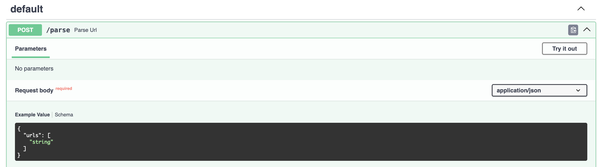
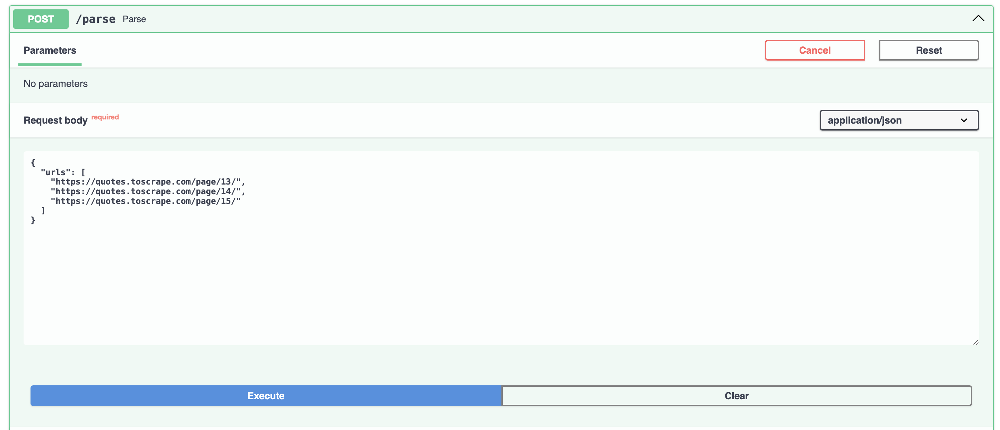
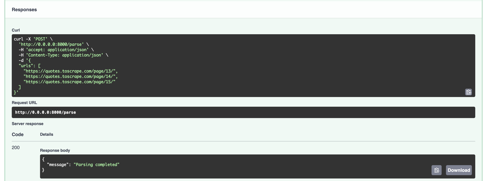
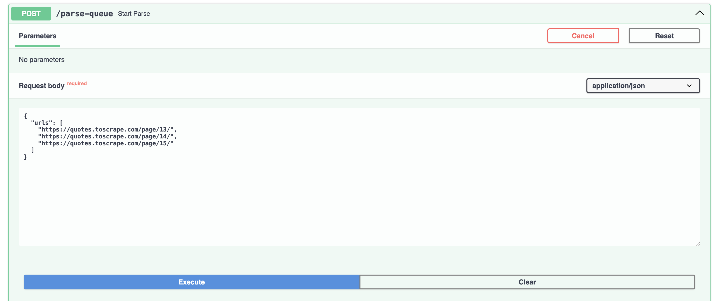
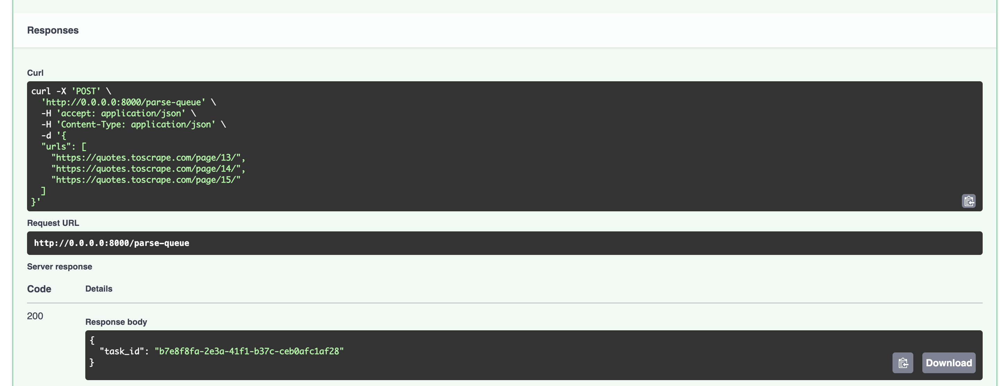
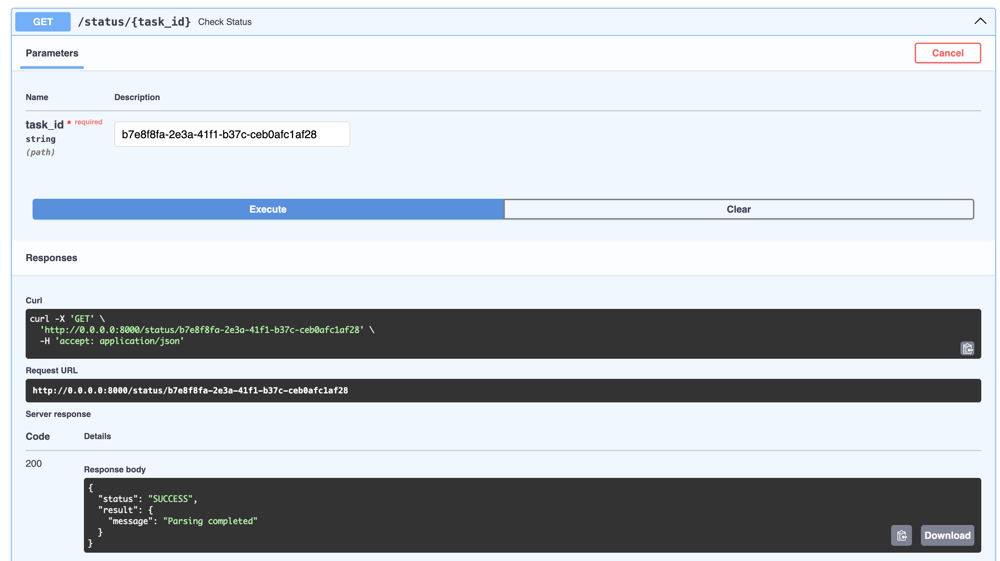

Лабораторная работа 3. Упаковка FastAPI приложения в Docker, Работа с источниками данных и Очереди
Dockerfile приложения FastApi
FROM python:3.11-slim
WORKDIR /app
ENV PYTHONPATH=/app
COPY requirements.txt .
RUN pip install --no-cache-dir -r requirements.txt
COPY . .
CMD ["uvicorn", "main:app", "--host", "0.0.0.0", "--port", "8000"]
Dockerfile приложения parser
FROM python:3.11-slim
WORKDIR /parser
COPY requirements.txt .
RUN pip install --no-cache-dir -r requirements.txt
COPY . .
CMD ["uvicorn", "app.parser_app:app", "--host", "0.0.0.0", "--port", "8001"]
docker-compose.yaml
services:
postgres:
image: postgres:15
container_name: postgres_container_lab
restart: unless-stopped
env_file:
- .env
environment:
POSTGRES_USER: ${DB_USER}
POSTGRES_PASSWORD: ${DB_PASSWORD}
POSTGRES_DB: ${DB_NAME}
PGDATA: /data/postgres
volumes:
- postgres:/data/postgres
ports:
- "5436:5432"
networks:
- backend
redis:
image: redis:7
container_name: redis_container
ports:
- "6379:6379"
networks:
- backend
fastapi_app:
build:
context: ./app
dockerfile: Dockerfile
container_name: fastapi_app
depends_on:
- postgres
- redis
env_file:
- .env
ports:
- "8000:8000"
networks:
- backend
parser_app:
build:
context: ./parser_app
dockerfile: Dockerfile
container_name: parser_app
depends_on:
- postgres
- redis
env_file:
- .env
ports:
- "8001:8001"
networks:
- backend
celery_worker:
build:
context: ./app
command: celery -A app.celery_app worker --loglevel=info
container_name: celery_worker
working_dir: /app
environment:
- PYTHONPATH=/app
depends_on:
- redis
- postgres
env_file:
- .env
networks:
- backend
celery_beat:
build:
context: ./app
dockerfile: Dockerfile
container_name: celery_beat
command: celery -A app.celery_app beat --loglevel=info
depends_on:
- redis
env_file:
- .env
networks:
- backend
volumes:
postgres:
networks:
backend:
celery_app.py
from celery import Celery
celery_app = Celery(
"fastapi",
broker="redis://redis:6379/0",
backend="redis://redis:6379/1"
)
celery_app.conf.beat_schedule = {
"run-parsing-every-2-minutes": {
"task": "app.tasks.run_periodic_parsing",
"schedule": 120.0,
},
}
celery_app.autodiscover_tasks(["app"])
tasks.py
import os
import requests
from app.celery_app import celery_app
from urls import urls
@celery_app.task(name="app.tasks.parse_url_task")
def parse_url_task(urls: list[str]):
parser_url = os.getenv("PARSER_URL", "http://parser_app:8001/parse")
response = requests.post(parser_url, json={"urls": urls})
response.raise_for_status()
return response.json()
@celery_app.task(name="app.tasks.run_periodic_parsing")
def run_periodic_parsing():
parse_url_task.delay(urls)
return f"Dispatched {len(urls)} parsing tasks"
Эндпоинты в приложении FastApi
Файл parser_app.py
from fastapi import FastAPI
from parser.parse import ParseRequest
from parser.parser import run_parser
app = FastAPI()
@app.post("/parse")
async def parse_url(parse_request: ParseRequest):
print(parse_request.urls)
print(f"Parsing URLS: {parse_request.urls}")
await run_parser(parse_request.urls)
return {"message": "Parsing completed"}
Эндпоинт приложения парсера

Эндпоинт для общения с parser


Эндпоинт для общения с parser, настроенный через очередь


Эндпоинт для того, чтобы узнать статус задачи
